Windows, the binary, from scratch
No Docker, no WSL: the zurg .exe in a folder, a config.yml you write once, and a Z: drive in Explorer. This page walks the whole thing in two passes — first RealDebrid with the qBittorrent endpoint, then a full reset and Usenet with the SABnzbd endpoint — because those are the two installs people actually make, and they exercise different halves of zurg.
Everything below was captured on a live install: Windows 11 Pro 23H2 (build 22631), PowerShell 5.1, WinFsp 2.0.23075, zurg 2026.08.30.0459-nightly-73-g5b4c9790, and a Real-Debrid account plus a Usenet news account. User names have been changed; API keys and credentials shown are illustrative.
What you need
- zurg.exe — from the sponsor releases. This page assumes you have downloaded it.
-
WinFsp — zurg mounts the library through rclone, and rclone needs WinFsp for a drive letter on Windows. Install it silently, or from the installer:
$url = "https://github.com/winfsp/winfsp/releases/download/v2.0/winfsp-2.0.23075.msi" Invoke-WebRequest -Uri $url -OutFile "$env:TEMP\winfsp.msi" -UseBasicParsing Start-Process msiexec.exe -ArgumentList "/i", "$env:TEMP\winfsp.msi", "/qn", "/norestart" -Wait - An account — a Real-Debrid API token for the first pass, a news server for the second.
Nothing else. rclone and ffprobe download themselves on first run.
1. First run: zurg builds its own home
Make a folder, put the binary in it, run it once with no config file:
PS C:\Users\yowmamasita> mkdir C:\Users\yowmamasita\zurg
PS C:\Users\yowmamasita\zurg> .\zurg.exezurg creates a default config, fetches its two helper binaries, tells you what to do next, and exits:
INFO setup Config file not found, creating default from config.simple.yml
INFO setup ffprobe: bin\ffprobe.exe (from github.com/eugeneware/ffmpeg-static)
INFO setup rclone: bin\rclone.exe (from downloads.rclone.org)
INFO zurg Default config created at config.yml
INFO zurg Update config.yml with your Real-Debrid token, then rerun zurg.The downloads are one-time and land in bin\ — about 85 MB each. After this first run the folder looks like:
C:\Users\yowmamasita\zurg\
├── bin\ ffprobe.exe, rclone.exe
├── data\ library cache, keys, the __magic__ table
├── dump\
├── logs\ zurg.log, rclone.log
├── nzbs\ the Usenet watch directory (second pass)
├── strm\
├── config.yml
└── zurg.exeThe generated config.yml is a minimal one — a placeholder Real-Debrid provider and two directory filters. You replace it with the config for whichever pass you are doing.
2. The RealDebrid pass
The config
Overwrite config.yml with this — a Real-Debrid token, the qBittorrent endpoint on, and the mount as Z::
zurg: v1
providers:
- type: realdebrid
token: YOUR_RD_API_TOKEN
directories:
shows:
group: media
group_order: 10
filters:
- has_episodes: true
movies:
group: media
group_order: 20
only_show_the_biggest_file: true
ffprobe_binary: bin\ffprobe.exe
rclone_binary: bin\rclone.exe
rclone_enabled: true
mount_path: "Z:"
rclone_extra_args:
- "--links"
magic:
enabled: true
qbittorrent:
enabled: true
api_key: "" # empty = zurg generates one and keeps it
categories: [tv-sonarr, radarr]Three Windows specifics in there:
--linksis optional, and worth keeping anyway. zurg serves the library as an rclone union of a local and a remote half, and WinFsp asks the mount root whether it is a symlink the moment the drive appears. Without the flag rclone answers that one probe withERROR : symlinks not supported without the --links flag: /and mounts regardless — measured 2026-08-31 on zurg2026.08.31.0443-nightlyagainst rclone 1.74.2 and 1.75.0, the drive, both halves of the union and a__magic__write behaved identically with and without it. With the flag the same probe logsNOTICE: union root '': Symlinks support enabledinstead, and rclone will carry real symlinks if you ever put any underdata\local. Keep it and the log stays clean.mount_path: "Z:"is a drive letter here, not a POSIX path. Any free letter works.- Keep
magic.enabled: trueif you ever want Sonarr or Radarr importing from this machine — an import is a rename inside__magic__, and without it every import becomes a full download. The same applies to the Usenet pass below.
Start it and read the log
Start zurg the plain way for now — a PowerShell window in the folder:
PS C:\Users\yowmamasita\zurg> .\zurg.exe --config config.ymlThe first thing it does is Real-Debrid's network test — it unrestricts test links at every download region and measures latency, taking about twenty seconds. Then the lines that matter:
INFO network_test Network test completed!
INFO zurg Provider realdebrid ready (type=realdebrid)
INFO router __magic__ serves sidecar files from data\local\__magic__
INFO router.qbittorrent qBittorrent API on /api/v2 and /qbittorrent/api/v2, save path Z:/__magic__, categories tv-sonarr, radarr
INFO router.qbittorrent qBittorrent: generated API key 9ec56e41e8c9afa4d5480e1222ad3173 — paste it into Sonarr or Radarr's API Key field, or pin it as qbittorrent.api_key in config.yml
INFO zurg Starting server on http://[::]:9999
INFO rclone rclone started with mount Z:, union local C:\Users\yowmamasita\zurg\data\local
INFO zurg Your realdebrid account will expire in 1858 daysThe generated key is also in data\qbittorrent-apikey. Then the library walk begins — the first start reads every torrent on the account, and on a large account that takes a while (a 3,300-torrent account took roughly 40 minutes here, sharing the provider's API budget with everything else on the account). While it walks, __magic__ answers Library is still loading — that is expected, not a fault.
Three warnings you may see, all known and none fatal:
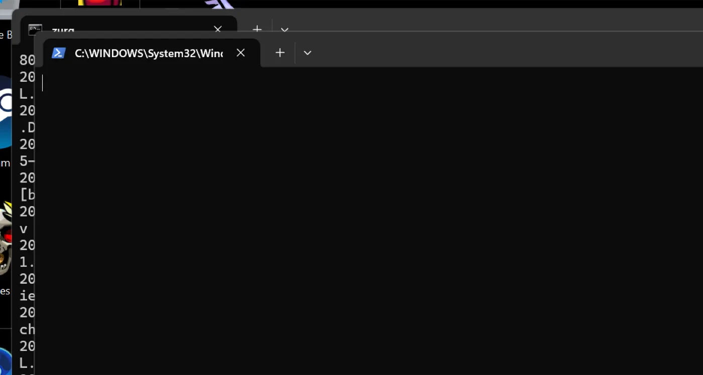
The dashboard
http://localhost:9999/ — library size climbing as the walk proceeds, traffic served, memory. The Quick Links are the whole UI: Torrent Manager, Config, Directories, Magic, Logs.
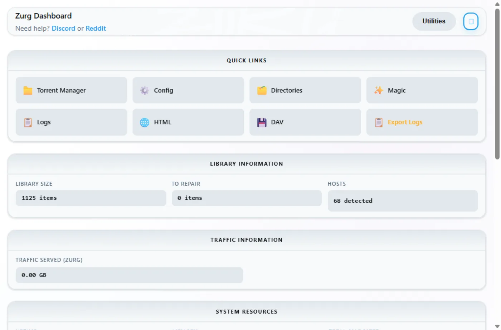
Config is where everything lives after the first run. The providers block shows the one account:
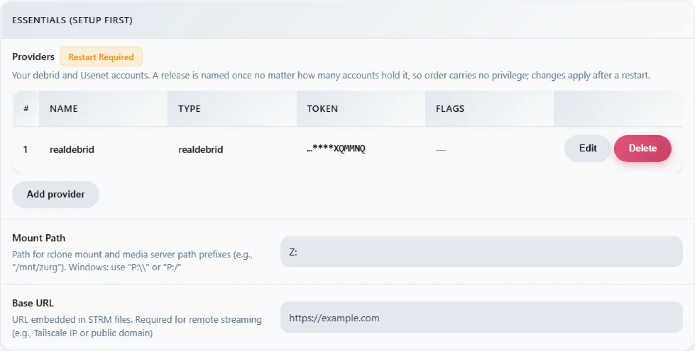
The download-client block — the same toggles you set in config.yml, editable here, every change stamped Restart Required, which is literal: both endpoints register their routes once at startup.
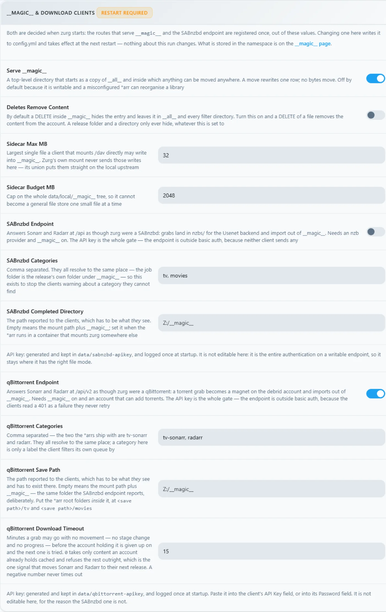
And the mount block, showing the drive letter and the rclone supervision:
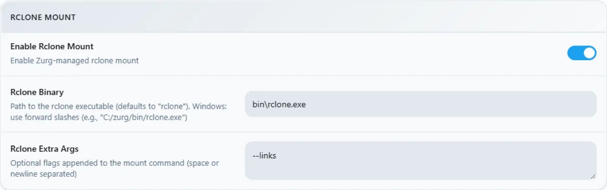
The Z: drive
When zurg runs, Z: is a petabyte-scale filesystem in Explorer:
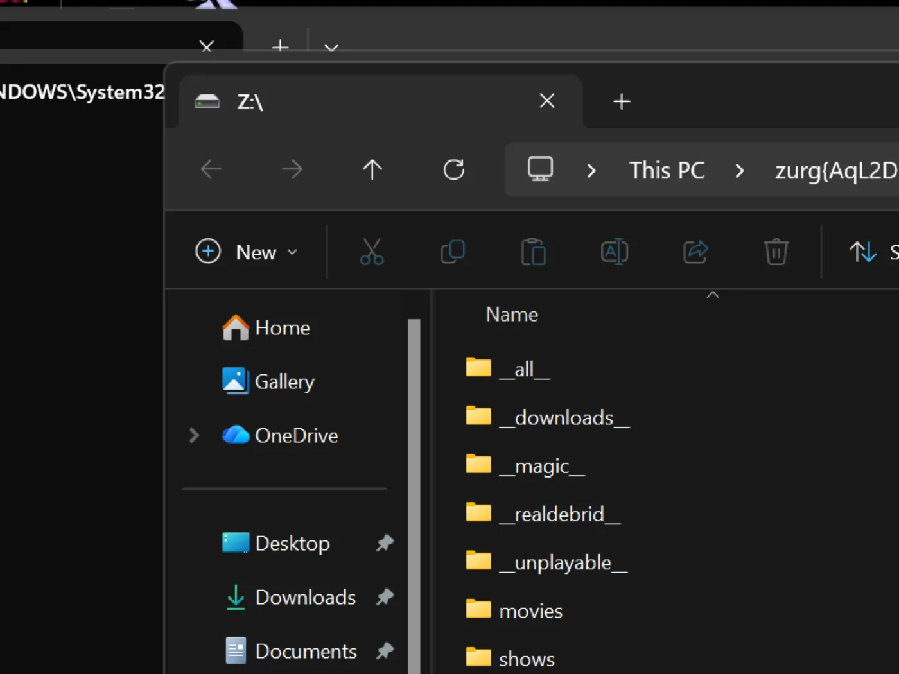
But only if zurg runs where Explorer can see it — and that is the one genuinely Windows-shaped rule in this setup. A drive-letter mount belongs to the logon session that created it. Start zurg from an SSH connection or from a service and the mount exists, works, and is invisible to your desktop. This is not a bug in WinFsp or rclone; it is how Windows scopes drive letters.
Prove the qBittorrent endpoint
Same probes as on any platform, from any PowerShell:
PS> $KEY = Get-Content data\qbittorrent-apikey
PS> Invoke-WebRequest "http://localhost:9999/api/v2/app/webapiVersion"
# the healthy unauthenticated answer is a 403 — "the API is here, log in"
PS> Invoke-RestMethod "http://localhost:9999/api/v2/app/version" -Headers @{ Authorization = "Bearer $KEY" }
v5.0.4
PS> (Invoke-RestMethod "http://localhost:9999/api/v2/app/preferences" -Headers @{ Authorization = "Bearer $KEY" }).save_path
Z:/__magic__And add a torrent to it. A .torrent file goes up with curl -F, or any client does it for you:
INFO router.qbittorrent qBittorrent: added op1176 (dc98af37…) to realdebrid as W7FRRMVJWUOMSThe release this install grabbed was not cached on the account, so the *arr-style queue showed a real download — progress climbing 2% → 10% → 50% → 75% → 99% over about six minutes with the rate Real-Debrid reported — and then:
INFO router.qbittorrent qBittorrent: op1176 (dc98af37…) finished on realdebridwith the torrent reporting finished and a folder to import from:
"content_path": "Z:/__magic__/[NanakoRaws] One Piece S01E1176 (THK TV 1080p HEVC AAC)"Reading the file through Z: pulled a megabyte in milliseconds — rclone's VFS read-ahead fronts the provider, so warm reads are local-disk fast and the articles stream in behind them.
One refusal worth knowing: the first release this install tried was named …WEBRip…, and Real-Debrid blocks some release names outright. zurg knows the patterns and refuses before spending an add slot:
WARN router.qbittorrent qBittorrent: realdebrid will not take op1176: it refuses that name outright, so the next account is triedPick a differently-named release and it goes through. The torrent walkthrough covers the whole endpoint in depth — timeouts, cached-only mode, failure semantics — and the client settings are the same as there, with two Windows notes: Host localhost when the *arr runs on the same machine, and the *arr must run in the same logon session as zurg for it to see Z: — see
3. Reset
Switching the install from Real-Debrid to Usenet is a wipe: stop zurg, delete everything the first pass created, keep the binary and bin\ so the helper downloads do not repeat.
PS> Stop-ScheduledTask zurg # or close the console window
PS> taskkill /IM zurg.exe /F ; taskkill /IM rclone.exe /F
PS> cd C:\Users\yowmamasita\zurg
PS> Get-ChildItem -Exclude zurg.exe, bin | Remove-Item -Recurse -Force
PS> Get-ChildItem
bin
zurg.exeThat Get-ChildItem -Exclude … | Remove-Item is the whole reset — config.yml, data\, logs\, nzbs\, all of it. What survives is exactly what a fresh install needs.
4. The Usenet pass
The config
Same skeleton, different provider — a news account instead of a debrid token, and the SABnzbd endpoint instead of the qBittorrent one:
zurg: v1
providers:
- type: nzb
nntp:
host: news.example.usenet.com
port: 563
tls: true
username: YOUR_NEWS_USERNAME
password: YOUR_NEWS_PASSWORD
connections: 8
directories:
shows:
group: media
group_order: 10
filters:
- has_episodes: true
movies:
group: media
group_order: 20
only_show_the_biggest_file: true
ffprobe_binary: bin\ffprobe.exe
rclone_binary: bin\rclone.exe
rclone_enabled: true
mount_path: "Z:"
rclone_extra_args:
- "--links"
magic:
enabled: true
sabnzbd:
enabled: true
api_key: "" # empty = zurg generates one and keeps it
categories: [tv, movies]Eight connections is plenty for streaming; the account's plan states its own cap.
Start it
PS C:\Users\yowmamasita\zurg> .\zurg.exe --config config.ymlThe contrast with the first pass is immediate: no walk. An NZB library starts empty — there is nothing to fetch from anywhere until you put an NZB in it — so startup is the network test, the endpoint lines, and the news connection:
INFO nzb NZB articles are kept in memory for the life of the process (nzb_segments: resident)
INFO zurg Provider nzb ready (type=nzb)
INFO router __magic__ serves sidecar files from data\local\__magic__
INFO router.sabnzbd SABnzbd API on /api and /sabnzbd/api, completed directory Z:/__magic__, categories tv, movies
INFO router.sabnzbd SABnzbd: generated API key b7fb2b17e04244e2d36d0aae2d77b37a — paste it into Sonarr or Radarr, or pin it as sabnzbd.api_key in config.yml
INFO zurg Starting server on http://[::]:9999
INFO rclone rclone started with mount Z:, union local C:\Users\yowmamasita\zurg\data\local
INFO zurg Usenet account nzb connected: nntps://news.frugalusenet.com:563 (8 connections)zurg dials the news server the moment it starts and keeps the connections warm, TLS and all. The SABnzbd key lands in data\sabnzbd-apikey.
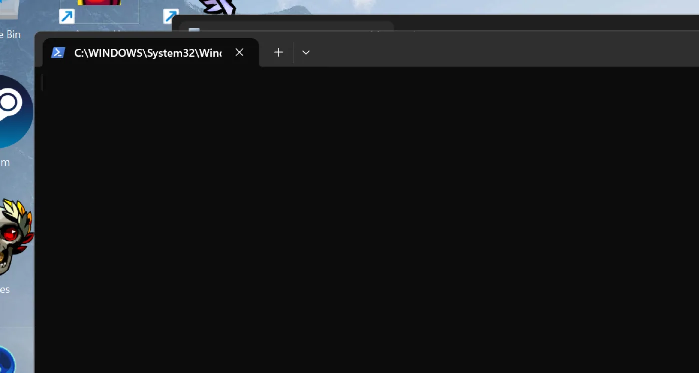
The dashboard now shows a library of nothing, which is correct:
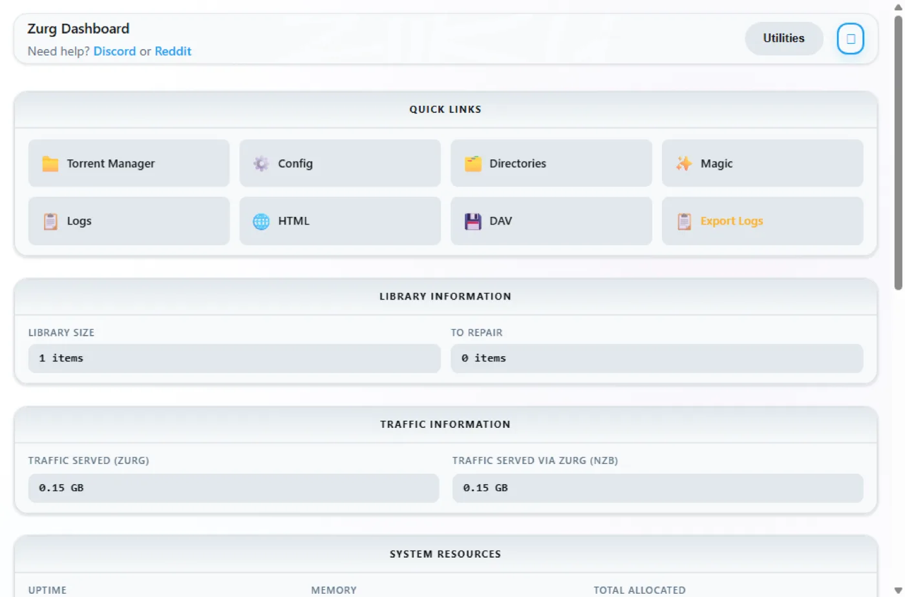
The providers block carries the news account, and the download-client block now shows the SABnzbd half:
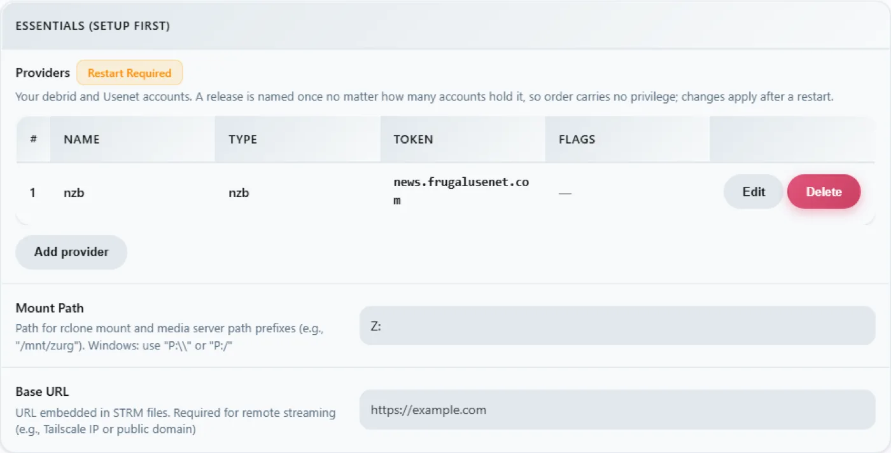
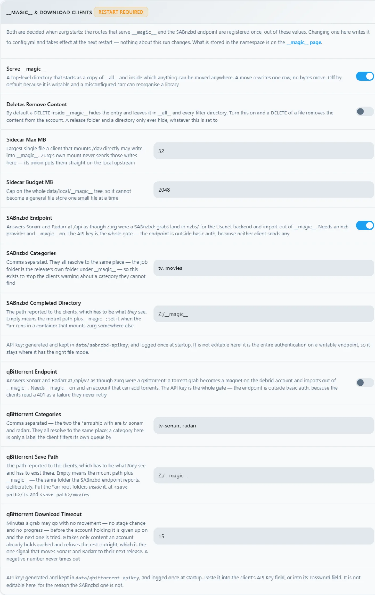
Drop an NZB in
The nzbs\ directory is the whole intake. Put one NZB there — downloaded from any indexer — and zurg picks it up:
PS> Copy-Item .\lanterns.nzb C:\Users\yowmamasita\zurg\nzbs\INFO nzb Loaded NZB lanterns.nzb: 8 filesThat is the line that says the NZB parsed. The release appears as a folder under __magic__ on the mount, and because a Usenet release names its files however the poster felt like, the inner file may look like J8AZfuVQCD4yPpRIF566Bv0xKoEpYa3M.mkv — the release folder carries the NZB's name, the files carry the poster's:
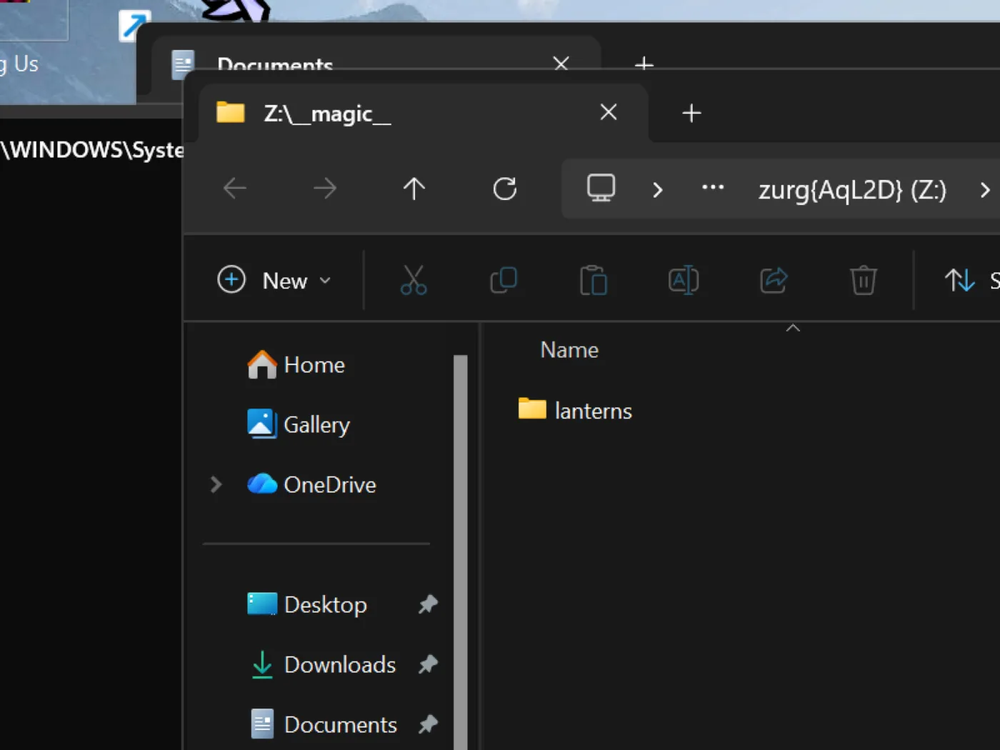
Nothing has been downloaded at this point, and nothing will be until something reads a file. The first read of the episode — 162 MB — fetched exactly the articles covering the requested range, yEnc-decoded them, and answered; later reads were instant because the VFS had read ahead around them. A 60 GB remux costs 60 GB of disk nowhere, Usenet or debrid.
The SABnzbd endpoint answers the same probes as always:
PS> $KEY = Get-Content data\sabnzbd-apikey
PS> Invoke-RestMethod "http://localhost:9999/api?mode=version&apikey=$KEY&output=json"
{"version":"4.5.1"}
PS> (Invoke-RestMethod "http://localhost:9999/api?mode=get_config&apikey=$KEY&output=json").config.misc.complete_dir
Z:/__magic__A wrong key is refused in the body, with an HTTP 200 — that is how SABnzbd itself behaves, and zurg copies it:
PS> Invoke-RestMethod "http://localhost:9999/api?mode=queue&apikey=wrong&output=json"
{"status":false,"error":"API Key Incorrect"}For the client side — Sonarr, Radarr, categories, root folders under Z:\__magic__ — the Usenet walkthrough is the step-by-step, and every path in it maps by replacing /mnt/zurg/__magic__ with Z:\__magic__. The Usenet guide covers block accounts, retention and repair.
Keeping it running: the session rules
A drive letter belongs to the logon session that mounted it. In practice, on the machine this page was captured on:
The reliable recipe is a scheduled task that runs as you, only when you are logged on:
$wdir = "C:\Users\yowmamasita\zurg"
Set-Content "$wdir\start-zurg.cmd" "@echo off`ncd /d $wdir`nzurg.exe --config config.yml"
$action = New-ScheduledTaskAction -Execute "cmd.exe" -Argument "/c $wdir\start-zurg.cmd"
$trigger = New-ScheduledTaskTrigger -Once -At (Get-Date).AddSeconds(5)
$principal = New-ScheduledTaskPrincipal -UserId $env:USERNAME -LogonType Interactive
$settings = New-ScheduledTaskSettingsSet -AllowStartIfOnBatteries -ExecutionTimeLimit ([TimeSpan]::Zero)
Register-ScheduledTask -TaskName "zurg" -Action $action -Trigger $trigger `
-Principal $principal -Settings $settings -Force
Start-ScheduledTask -TaskName "zurg"A logon trigger (New-ScheduledTaskTrigger -AtLogOn) instead of -Once makes it come back on reboot. ExecutionTimeLimit ([TimeSpan]::Zero) matters — without it the Task Scheduler kills the task after 72 hours.
Two traps measured on this box:
- A console with
-NoExitwedges the task slot. If the launcher leaves a window open after zurg stops, the scheduler considers the task still running and every laterStart-ScheduledTaskis refused with0x800710E0.Stop-ScheduledTask zurgbefore starting it again, or run the binary directly as above so the task ends when zurg ends. Get-PSDrivein one window does not falsify the mount. The drive is visible to processes in the same logon session — your desktop apps — not to every PowerShell you happen to open. IfZ:is missing in a window, check where that window's session came from before concluding the mount died.
If you do not need Explorer at all — a headless box, or clients that speak HTTP — none of this matters: run zurg however you like and point things at http://localhost:9999/dav/ or the endpoints. The session rule only governs the drive letter.
Troubleshooting
PowerShell over SSH, for the remote-minded
Windows PowerShell parses some POSIX habits badly, and SSH eats quoting. && is not a separator; 2>/dev/null is not a redirect; $_.Property inside an inline -Command arrives mangled. For anything non-trivial, put it in a .ps1, copy it over, and run powershell -ExecutionPolicy Bypass -File C:\path\script.ps1 — the whole rig on this page was driven exactly that way.
See also
- Docker and macOS — the same install on other platforms
- Sonarr & Radarr, torrents — the qBittorrent endpoint end to end, client settings included
- Sonarr & Radarr — the SABnzbd endpoint, same
- Usenet — news accounts, retention, repair, the
nzbbackend in depth __magic__— the directory both endpoints import from